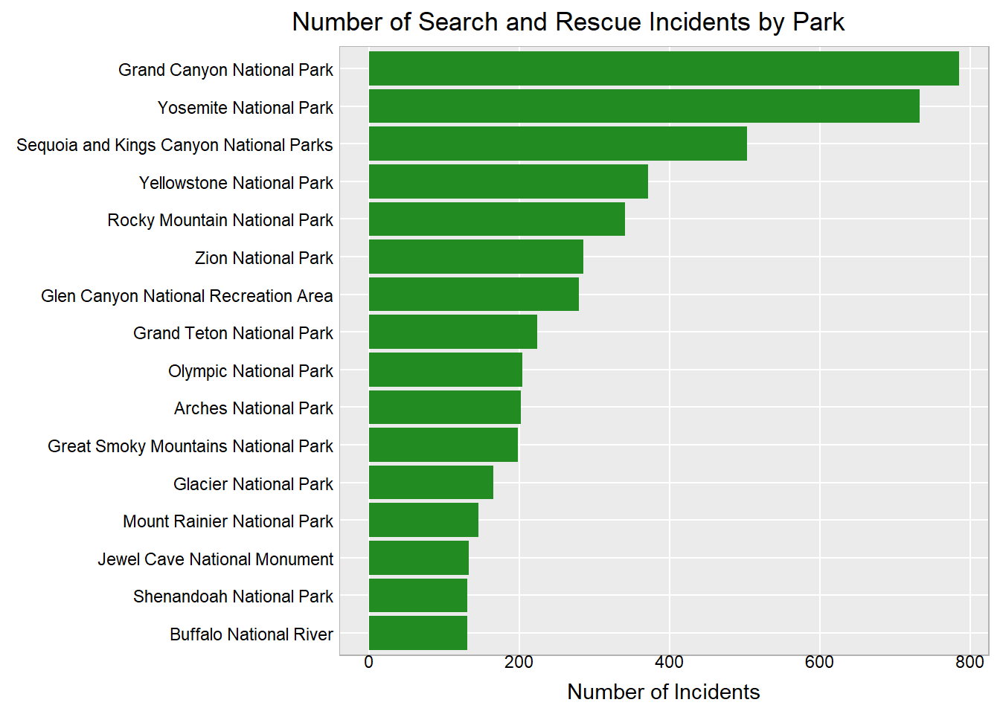
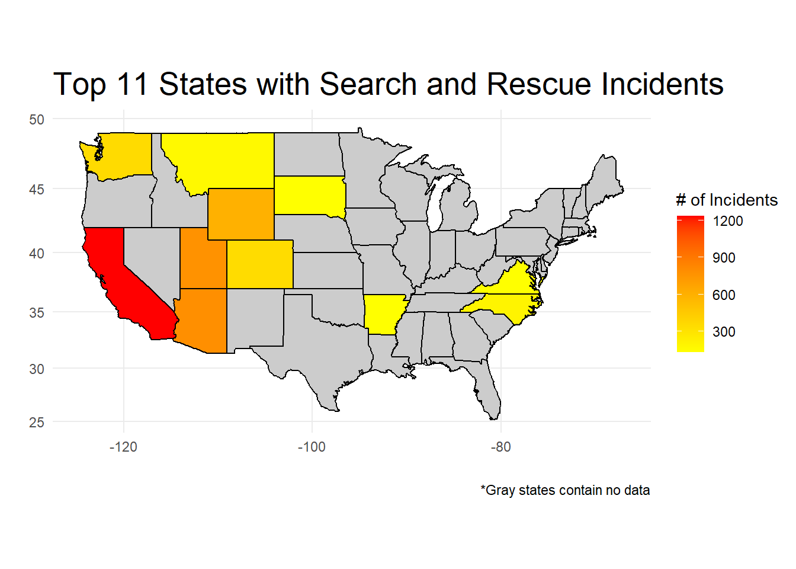
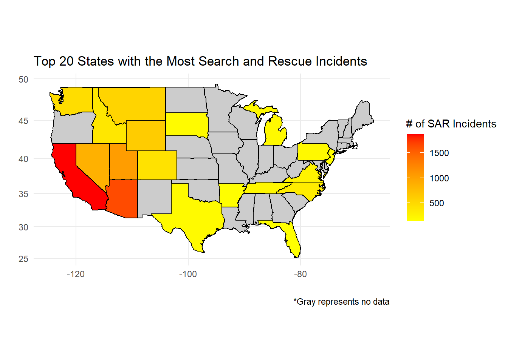

Redesign Project
The Original Design
For this project, an Outforia 2022 article on “The USA’s Search and Rescue Hotspots,” was chosen. Within the article there are four tables consisting of the highest numbers of Search and Rescue (SAR) incidents grouped by either National Parks or States. [1] For this project, two of the four tables were chosen for a redesign.
While the article is informative and helps readers understand which US National Parks could be considered most dangerous, the goal of this project was to enhance the visualization through best practices and improved graph design using R.
The article focuses on Search and Rescue incidents that occurred between 2018-2020 within US National Parks. Considering the context and the author’s statement at the bottom of the article, this article and tables were likely created for readers who enjoy the outdoors, hiking, exploring and soaking in the beauty of national parks. It is also likely that the article is intended to help novice outdoor adventurers by providing awareness into the highest number of search and rescue events.This helps readers make informed decisions regarding their next outdoor adventure!
The first table provides the top 16 national parks with the highest number of incidents between 2018-2020. Some of the disadvantages of this table is that it is a table, while simple and easy to read, it does not provide quick comparison like a bar chart would offer. Another consideration is the unnecessary visual at the top of the table. Above the table are the three parks with the highest number of incidents. The only additional information provided are the states the parks reside in; however, this is easily overlooked based on their position, color, and pretty yet distracting pictures.
The second table provides the top 20 US States with the most search and rescue incidents. Yes, Virginia made the list. In this table we have more information on total search and rescue incidents, but grouped by State instead of individual parks. This provides a holistic view of incidents across a given state. Again we are given a table, which doesn’t offer fast comparison and the top three states which offer no additional information from the table but does offer a picture of the states’ flags.
About the data
To obtain the data Outforia submitted a freedom of information request to the National Park Authority for search and rescue incidents between 2018-2020 for all US national parks. In cases where national parks spanned more than one state, Outforia counted the number of incidents for each state. In this redesign project, data from the article and tables were used.
Information from National Park Services (NPS) site was used to supplement additional information. [2] For example, adding state to the national parks data and adding coordinates to allow for plotting on the interactive map.
Purpose of Redesign
The objectives of redesigning these tables are to provide informative graphs to help readers further interpret the data. By ensuring the graphs focus on accurate comparisons, simplified and uncluttered graphs, and appropriate context to keep the readers engaged. This will help readers make informed decisions about their next visit to a National Park.
Redesign of Table 1
In this redesign, a horizontal bar chart is used. This allows for easy reading of the park names while still arranging the number of incidents from high to low. Also, this chart provides quick comparison for readers to easily compare bar lengths. In the book, Storytelling with data, “Our eyes compare the end points of the bars, so it is easy to see quickly which category is the biggest, which is the smallest, and also the incremental difference between categories.” [3]
Redesign of Table 1, another look
In this redesign, table 1 is transformed to provide a map view of the data. This takes a different approach to understanding the search and rescue incidents from table 1. Here we are still using the same data from table 1, but instead of representing the park the state is used instead to represent states with the most incidents. This is another way to visualize the information from table 1, although not complete. Another consideration is that some National Parks span more than one state. In this map, only one state was selected for each National Park. If data was available for each of the search and rescue events, then we could plot those events and have a more exact number of what state the incidents occurred in.

Redesign of Table 1, a better look
Here is another way to visualize the information that blends location while still providing the number of Search and Rescue Incidents for the top parks. The use of an interactive map is to allow readers not only to understand the parks with the highest number of incidents, but to help explore where those parks are and how large they area. The interactive map allows the reader to zoom in and out and pan around the map. Each marker has the name of the Park and the number of incidents. *Note: Sequoia National Park and Kings Canyon National Park were originally combined in the table. However, the NPS has them as separate parks.Therefore the number of incidents were divide between the two parks.
Redesign of Table 2
In table 2 we see more states with the total number of Search and Rescue incidents from 2018-2020. Here it seems like the visual is on the right track; however, after counting the states there are only 19! Oh yes, sneaky Alaska and Hawaii are not in the picture.

Here we must take another approach to the map view this time using library(usmap) and library(sf). Initially, an unusual error occurred when trying to render from R Studio to html. The map was missing the data overlay. The map generated without issues in R Studio. For a workaround, I saved the ggplot as an image and included in the qmd. After revisiting this issue on the Redesign Code page, the issue was discovered in the variable name for the dataframe that was being used. After renaming the variable the issue was resolved.
Now we have all top 20 states properly represented on the map. To reduce clutter and unnecessary information the x-axis and y-axis were removed. This is not only good practice to reduce clutter but another consideration is the placement of Alaska, Hawaii, and Puerto Rico. They are placed here to include them in the graph not to represent their locations.
Video Presentation
This is a test.
References
[1]
Borg, C., 2022, “The USA’s Search And Rescue Hotspots,” Outforia. [Online]. Available: https://outforia.com/search-and-rescue-hotspots/
[2]
2024, “NPS – Land Resources Division Boundary and Tract Data Service,” National Park Service. [Online]. Available: https://public-nps.opendata.arcgis.com/maps/c8d60ffcbf5c4030a17762fe10e81c6a/about
[3]
Knaflic, C. N., 2015. Storytelling with data: a data visualization guide for business professionals (1st ed.). Wiley.